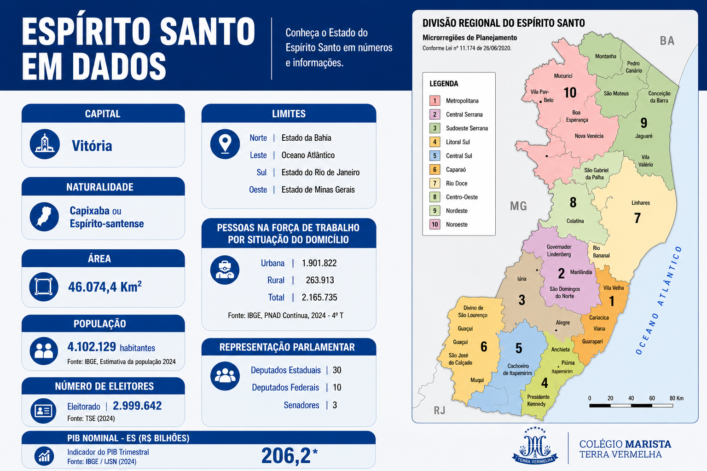

Panorâmica Geral do Estado
O Espírito Santo é uma das quatro unidades federativas que compõem a Região Sudeste do Brasil. Apesar de possuir a quarta menor extensão territorial do país, é uma unidade estratégica de enorme peso econômico, destacando-se na exportação de minérios, agronegócio de precisão, extração de petróleo/gás e logística portuária internacional.
Sua capital é Vitória, fundada em 1551 e localizada em uma ilha na Baía de Vitória. O estado equilibra um ecossistema costeiro de mais de 400 km de praias com um interior montanhoso de clima ameno e expressivo patrimônio ambiental e histórico.

Dados Gerais e Indicadores
Capital
Vitória (Fundada em 1551)
População
~3,83 milhões de hab. (Censo IBGE)
Área Territorial
46.074,447 km² (78 municípios)
Gentílico
Capixaba ou Espírito-santense
Extensão Litorânea
Aproximadamente 411 km de costa
IDH-M Estadual
0,771 (Considerado Muito Alto)
Ponto Culminante
Pico da Bandeira (2.892 metros)
Matriz Econômica
Mineração, Petróleo, Portos e Café
Economia e Infraestrutura Estratégica
O Espírito Santo funciona como um dos principais corredores de exportação e importação da América Latina:
- Complexo Portuário: Destaque para o Porto de Tubarão (um dos maiores exportadores de minério de ferro do mundo), o Porto de Vitória e o Porto de Barra do Riacho.
- Rochas Ornamentais: O estado é o maior produtor e exportador nacional de mármore e granito, fornecendo pedras para monumentos globais.
- Petróleo e Gás Natural: É o 3º maior produtor de petróleo e gás do Brasil, com exploração concentrada na bacia de Campos e no pré-sal.
- Agropecuária Forte: Maior produtor nacional de café conilon e destaque global no cultivo do café arábica de altitude e fruticultura (mamão e cacau).
Curiosidades e Fatos Marcantes
- Origem do termo "Capixaba": Vem do Tupi e significa "roça, terra de plantação", referindo-se aos milharais cultivados pelos indígenas na ilha de Vitória.
- Capital Insular: Vitória é uma das três únicas capitais estaduais brasileiras localizadas em uma ilha (junto a Florianópolis e São Luís).
- Patrimônio Religioso: Abriga o Convento da Penha (Vila Velha), construído em 1558 no topo de um penhasco de 154 metros.
- Cartão-Postal Geológico: A Pedra Azul em Domingos Martins possui um "lagarto" entalhado naturalmente na rocha que muda de cor conforme a luz solar.
- Tradição Gastronômica: A Moqueca e a Torta Capixaba são preparadas exclusivamente em panelas de barro artesanais produzidas pelas Paneleiras de Goiabeiras.
- Biodiversidade de Ponta: Possui o Parque Nacional do Caparaó e a Reserva Natural Vale, um dos últimos grandes remanescentes de Mata Atlântica do país.
Divisão por Regiões Administrativas
O governo estadual organiza os 78 municípios em 10 regiões de planejamento:
- Metropolitana: Vitória, Vila Velha, Serra, Cariacica, Viana, Guarapari e Fundão.
- Central Serrana: Santa Leopoldina, Santa Maria de Jetibá, Santa Teresa, Itarana e Itaguaçu.
- Sudoeste Serrana: Domingos Martins, Venda Nova do Imigrante, Marechal Floriano, Afonso Cláudio, etc.
- Litoral Sul: Anchieta, Piúma, Itapemirim, Marataízes e Presidente Kennedy.
- Central Sul: Cachoeiro de Itapemirim, Castelo, Mimoso do Sul, Muqui, Vargem Alta, etc.
- Caparaó: Alegre, Guaçuí, Iúna, Ibitirama, Divino de São Lourenço, Dores do Rio Preto, etc.
- Rio Doce: Linhares, Rio Bananal e Sooretama.
- Centro-Oeste: Colatina, Baixo Guandu, Marilândia, São Gabriel da Palha, Pancas, etc.
- Nordeste: São Mateus, Conceição da Barra, Jaguaré e Pedro Canário.
- Noroeste: Nova Venécia, Barra de São Francisco, Ecoporanga, Pinheiros, Montanha, etc.